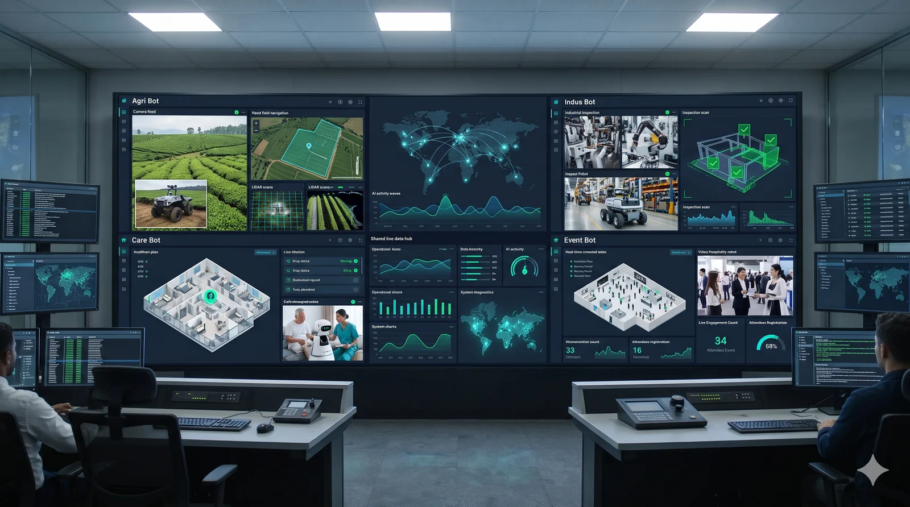

AI & Computer Vision
Shared edge vision models interpret RGB, depth, and thermal streams for weeding, defect QC, and crowd tracking.
NANVI Technology Solutions LLC (Nanvi.ai) builds custom AI software and field-ready robotics across agriculture, manufacturing, assistive care, hospitality, warehousing, and live events.
Instead of starting from zero for each sector, every Nanvi system shares perception, autonomous navigation, and fleet telemetry on our unified Nanvi Robotics Intelligence Platform (NRIP).

From Agri Bot selective weeding in tea estates and autonomous greenhouses, to Indus Bot optical quality inspection on factory lines, Care Bot supporting daily routine tasks, and Event Bot automating venue check-in—each platform solves a focused operational bottleneck.
Our cross-border structure pairs US-based consulting and deployment coordination in Plano, Texas with dedicated robotics R&D, computer vision training, and embedded software engineering in Chennai, India.
Practical autonomy requires knowing what a robot should—and should never—do. Every mobile platform uses LiDAR and optical obstacle envelopes around people, while industrial cells include hardware/software emergency stops and human override telemetry.
In healthcare and rehabilitation settings, Care Bot strictly handles non-clinical support such as item fetching, schedule reminders, and supply transport—it never lifts patients, administers medication, or makes medical decisions.
Our Vision: A future where responsible AI and accessible robotics remove hazardous, repetitive drudgery so human teams can focus on craft, strategy, and direct care.
Our Mission: Deliver reliable, modular AI software and autonomous robotics—available as custom enterprise builds or flexible Robotics-as-a-Service (RaaS)—through close engineering partnership.
NRIP unifies live camera feeds, field navigation, anomaly alerts, and multi-robot fleet telemetry inside a single operations backbone across Agri Bot, Indus Bot, Care Bot, and Event Bot.

Shared edge vision models interpret RGB, depth, and thermal streams for weeding, defect QC, and crowd tracking.
Reusable mapping, path planning, dynamic obstacle avoidance, and operator teleoperation across indoor and outdoor sites.
Central dashboards aggregate live video feeds, battery diagnostics, task status, and operational logs in one view.
Because NRIP shares core perception and navigation modules across all robot lines, moving from initial workflow scoping to a field-ready pilot takes weeks of configuration rather than rebuilding foundational software.
NANVI Technology Solutions LLC
520 Central Parkway East, Suite 105
Plano, Texas 75074, USA
Client Consulting, Pilots & US Deployment
AI & Robotics R&D Center
Chennai, Tamil Nadu, India
Computer Vision, NRIP Software & Mechatronics
hradmin@nanvitech.com
support@nanvitech.com
Schedule a Consultation →